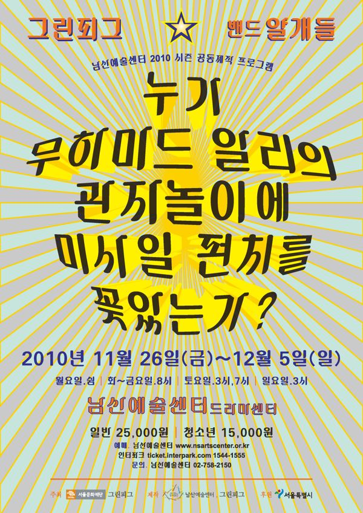

그린피그 > 아카이브 > 누가 무하마드 알리의 관자놀이에 미사일 펀치를 꽂았는가?
안재승 작, 윤한솔 연출

그린피그와 밴드 '얄개들'이 함께 만든, 콘서트와 드라마가 한 무대에서 쇼를 펼치는 '콘써라마'. 서울문화재단 주최, 남산예술센터와 그린피그 공동 제작.
2010.11.26–12.5 / 남산예술센터 드라마센터
이전: 〈의붓기억-억압된것의귀환〉 | 다음: 〈나는야쎅쓰왕〉 아카이브로 돌아가기 | 아무 작품이나
발행일 2026.11.9